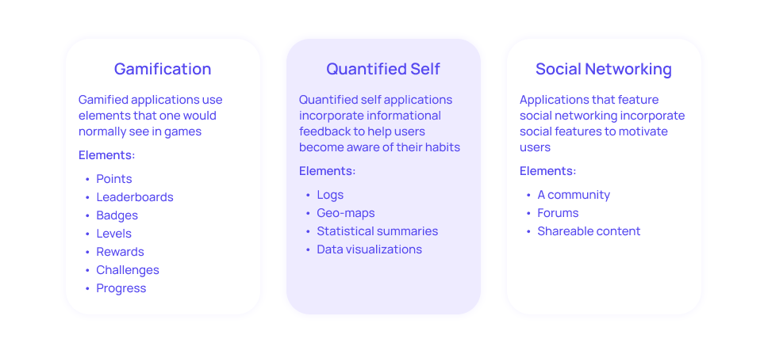
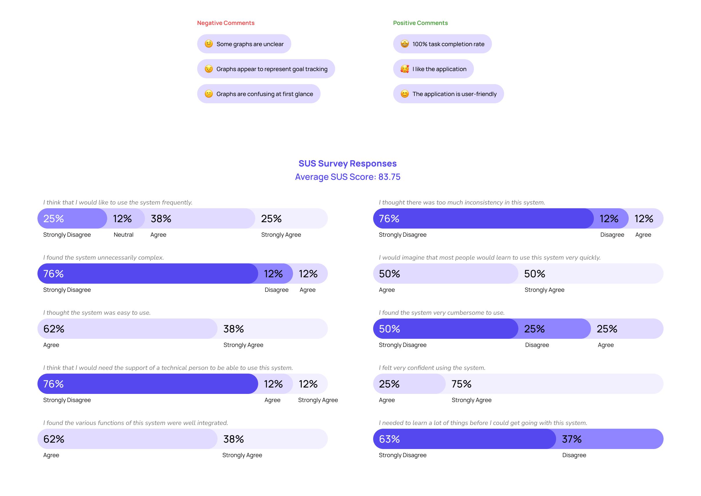
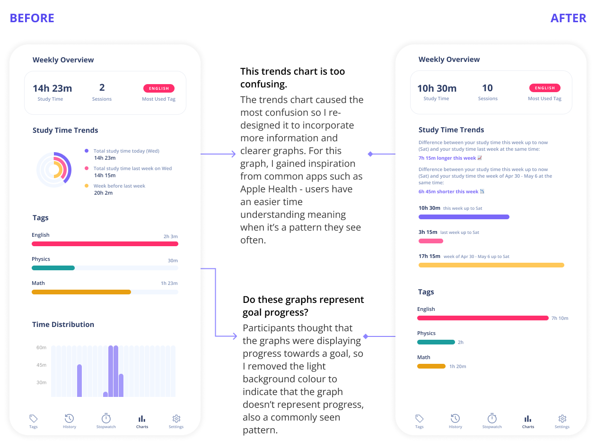
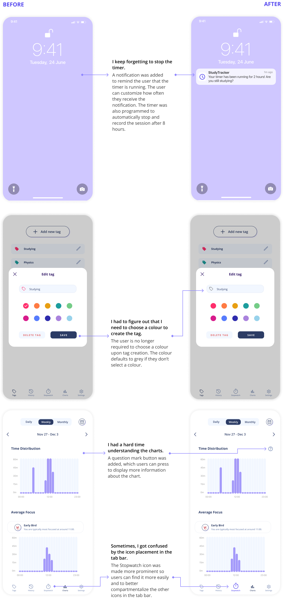
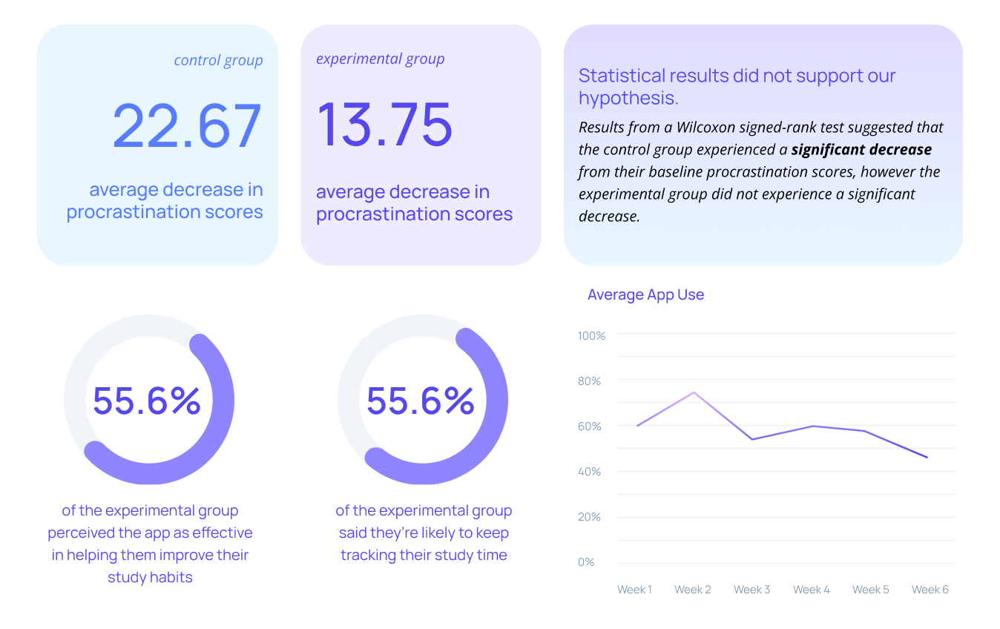
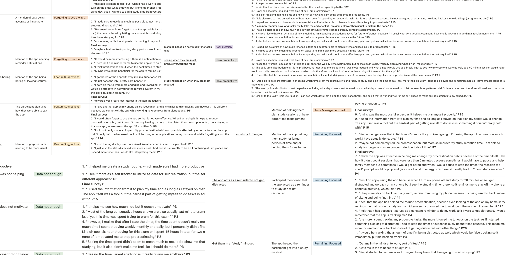
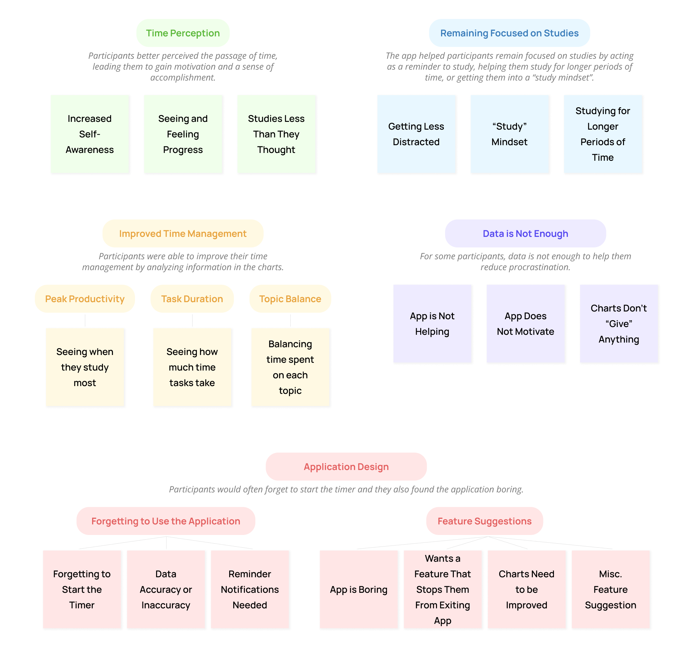

Back to top
Academic procrastination and the quantified self
Project Type
Master's Thesis (Carleton University)
Master's Thesis (Carleton University)
Duration
May 2022 — Aug 2023,
16 Months
May 2022 — Aug 2023,
16 Months
Skills
Prototyping,
User Research,
Qual + Quant Analysis
Prototyping,
User Research,
Qual + Quant Analysis
Tools
Figma, Surveys,
Interviews,
Notion, Excel,
Transcribing Software,
JASP
Figma, Surveys,
Interviews,
Notion, Excel,
Transcribing Software,
JASP
Overview
Background Information
The following case study is a condensed overview of my 16-month Master’s thesis. I specialized in Human-Computer Interaction, and did research on how students interact with focus tracking apps.Abstract
Procrastination is a prevalent issue among university students, and it is important to investigate potential interventions. This thesis describes the design and implementation of a self-tracking mobile application that students can use to track their study sessions. The aim of this study was to investigate the impact that the application has on procrastination behaviour, along with an exploration of how students interpret their study data. A pilot study revealed that participants experienced an improvement in their focus, time management skills, and accountability. Following this, results from a six-week randomized controlled trial indicated that only the control group experienced a significant decrease in procrastination scores, however there was no significant difference between the two groups. Additionally, I identified themes that describe how students interpret their data and additional impacts that the application had on study behaviour, which led to a discussion about design implications and areas for future research.My Role
Primary Researcher - independent thesis projectResearch Process

Setting the Scene
Motivation
Have you ever felt stuck in a never-ending cycle of procrastination, especially during your university days? Research shows 80% to 95% of university students face this challenge, leading to negative outcomes such as stress and poor well-being. Traditional solutions such as training programs or therapy are costly and time-consuming.Leveraging the trend of tracking data for health, wellbeing, and productivity (also called the Quantified Self), focus-tracking apps offer a cost-effective and accessible intervention. The question remains: Are focus-tracking apps effective for students? Let's find out!
Persuasive Design
My literature review identified three persuasive element classes. Many studies test apps with all features, making it hard to discern their individual effects. Thus, our focus was on a purely quantified self application, isolating the variable for assessment. In non-research contexts, apps typically combine elements from multiple classes.
The StudyTracker App
Design
Diving into the application's design, it's important to note that this was an HCI research project, not a UX design project; therefore, the design process wasn't the main focus. For the app's design, I drew inspiration from existing focus-tracking apps on the market and incorportated recommendations for self-tracking apps that I identified during my literature review. Three main components went into the design of the application:
01
The Tracking Mechanism. The app used a semi-automated tracking mechanism.
This means that the user must initiate and end the timer, but the rest of the work is done by the app (ie. Creating data visualizations, summing up data).
02
Data Visualizations. Since there were no research-based guidelines on data visualizations for productivity tracking applications,
I carefully assessed all the data visualizations in popular focus apps, and used this knowledge to construct a dashboard for the app.
03
Visual Aesthetics. I followed design principles to ensure that the app had an aesthetically pleasing user interface.
I drew rough paper prototypes followed by wireframes. Finally, I created a high-fidelity prototype in Figma.

Development
I implemented the application using Swift, making it compatible with iOS 15.0+. A functioning version of the app was deployed for Beta testing.


Usability Test
During development, I conducted a usability study to ensure that the app design was usable prior to moving onto the Pilot and Main studies. I asked eight participants to think out loud as they performed some tasks on the high-fidelity Figma prototype, then they filled out a System Usability Scale. Key insights from the usability test are outlined below:

App Iterations
Following the usability study, I implemented changes to the graphs that participants indicated as confusing.
Pilot Study
Next, I conducted a pilot study with the Beta deployment of the app.Objectives of the pilot study:
01
Ensure the app has no bugs
02
Get initial feedback and experiences of users
Seven participants used the app for 10 days each, then I conducted semi-structured interviews with each participant to learn more about their experience using the app.
Results
I transcribed the interviews and then performed a thematic analysis to identify themes. Four themes emerged that encapsulated the participants’ experiences using the app: Improvement in Study Behaviour, Invoked Positive Feelings, Satisfaction with the App, Design Suggestions.
App Iterations
Following the pilot study, I implemented features that the participants suggested and addressed some usability problems.
Main Study
For the main study, I conducted a 6-week randomized controlled trial with a control group consisting of nine participants (did not use the app) and an experimental group consisting of nine participants (used the app). Both groups responded to an initial and final procrastination questionnaire, along with weekly procrastination questionnaires to assess subtle changes.Objectives of the main study:
01
Understand how the app impacts students’ study behaviours
02
Examine how students interact with and interpret their study data
03
Test the hypothesis: The experimental group will experience a significantly greater decrease in procrastination scores than the participants in the control group.
Results
I performed statistical analysis on all quantitative data that was collected. Important insights gained are shown in the diagram below:
I performed a thematic analysis, beginning by printing all open-ended survey responses and highlighting important quotes. I transferred quotes into a Notion data sheet and grouped them based on codes. I created an affinity map to see which codes can be turned into larger themes.

The thematic analysis resulted in five main themes that encompassed the experiences of the experimental group.

Conclusions
Reflection
Reflecting on the outcomes, the study's limitations, including a restricted participant pool, resulted in challenges in drawing definitive conclusions regarding the app's impact on procrastination. Intriguingly, statistical analysis revealed a greater decrease in procrastination scores among the control group, prompting reflections on the app's engagement and the potential burden of consistent tracking on students.Design Implications
01
Reminding Users to Track: While recognizing the importance of notifications, users should have the option to tailor their notification settings.
These customizations halt the user from becoming annoyed by notifications.
02
Ensuring That Data is Accurate: Users should be able to edit, manually add, and remove data entries, especially when tracking is semi-automated,
in order to maintain data accuracy.
03
Optimizing Data Visualizations: The recommendation is to provide a variety of customizable charts and a flexible dashboard
to adhere to the diversity in user preferences.
04
Gamification and Social Features: Recognizing the user need for varying persuasive features, future iterations could explore gamified and social elements.